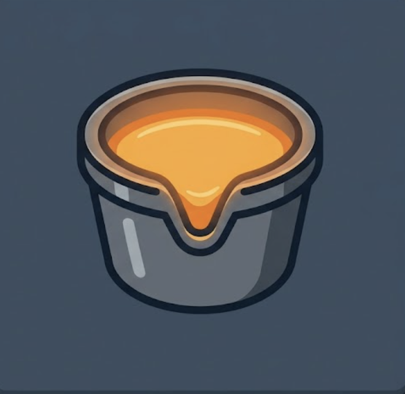
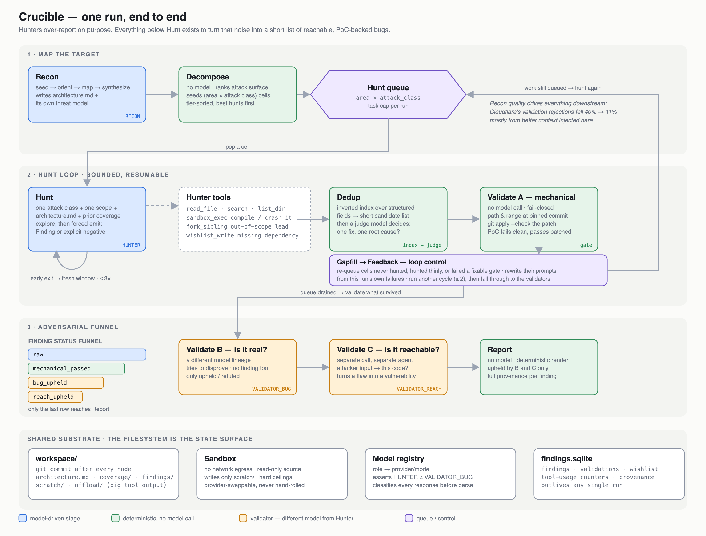

I want to start with what actually happened, because the headline and the finding are not the same thing.
In April, Anthropic gave a handful of organizations early access to Mythos Preview under Project Glasswing. Within a month, those partners had surfaced more than 10,000 high- or critical-severity vulnerabilities across the software that runs critical systems. That is the headline.
The finding is in what Cloudflare and Visa wrote afterward. Cloudflare ran the model against more than 50 of its own repositories and learned that pointing it at a codebase and asking for bugs produced findings but terrible coverage. So they built a harness: recon, then roughly 50 narrowly scoped hunters in parallel, then an independent validator whose only power was to disprove. The numbers that moved were the harness numbers. Validation rejections fell from around 40% to 11%, high-integrity findings rose from about 35% to 58%, and Cloudflare is explicit that those gains came from context and gating, not a better model.
Visa tells the same story from the other end. They open-sourced their harness in June, and their primary metric isn’t findings per scan. It’s time from discovery to a validated fix, because after Glasswing the bottleneck wasn’t finding bugs. It was proving, disclosing, and patching them.
Two companies with early access to the most capable security model in existence both came back and said, in effect: the model is not the hard part.
Which makes the strategy most security teams adopted this year, wait for Mythos access or for a vendor to productize it, look backwards. If the orchestration is the durable asset, then the orchestration is what you should be building today, with whatever models you can already run. The frontier model, when it arrives, slots into a role. It doesn’t replace the roles.
To test that claim hands-on I built Crucible: a from-scratch, model-agnostic, self-hostable vulnerability discovery harness. It is a learning-and-research build, not a product, and roughly half of it is still stubbed. But it is far enough along that I can walk through what “a harness” concretely means, which design decisions turned out to be load-bearing, and why none of them require a frontier model to start.
Anatomy of Crucible

There are two layers, and keeping them apart is most of the architecture.
The stage machine is coarse and durable: a handful of nodes, a checkpoint after every step, resume-from-crash as a library feature rather than something I wrote. The agent stages are fine-grained: each node is an agent loop with its own tools, its own model role, and its own context budget. The stage machine decides what runs next; the agent decides how to do the work. Neither layer holds content. The graph state is pointers and counters, and everything an agent produces lands on disk.
Recon reads the repository top-down. A deterministic seed pass indexes files, detects the framework, and classifies entry points (network, IPC, file, CLI, deserialization). Then a lead agent partitions the code into subsystems, one agent per subsystem maps it in parallel, and a deterministic synthesis step stitches those maps into an architecture.md every downstream agent reads: build commands, trust boundaries, external inputs, ranked attack surface. Recon also writes its own threat model rather than receiving one, so the attack-class taxonomy is specific to this repo. Finally it decomposes all of that into a queue of (area × attack_class) cells, tier-sorted so the highest-value hunts come first.
Hunt pops a cell and gets exactly one attack class, one scope hint, the architecture document, and prior coverage notes. It explores with read-only tools and a per-task sandbox, then a second forced call makes it emit either a structured Finding or an explicit negative. Both are coverage. If it exits early, the harness reinjects the prompt in a fresh context window, up to three times. If it trips over something interesting outside its scope, it forks a sibling with a precise seed instead of wandering.
Dedup runs before any model is spent on validation. Deterministic inverted indexes over structured fields (cited file, normalized boundary, rare tokens) produce a short candidate list; only then does a judge model decide whether one fix at one root cause would close both. Cross-run stable keys reopen existing records instead of spawning new ones.
Validate A is plain Python. Cited path exists at the pinned commit, line range in bounds, threat model populated, patch applies with git apply --check, PoC parses, and the PoC gate: the test fails on the unmodified tree and passes with the patch. Anything that fails here never costs a model call.
Gapfill and Feedback close the loop. Gapfill reconstructs the intended coverage matrix and re-queues cells that were never hunted, hunted thinly, or failed validation for a fixable reason. Feedback reads this run’s own failures and appends a targeted note to each re-queued prompt: cite the exact line, give a patch that applies, run one trivial sandbox command first. Then loop control either sends the queue back to Hunt or, after two cycles, lets the run fall through.
Takeaway
Mythos will arrive, for some of you, eventually. And when it does, you’ll rediscover the lesson the same way Cloudflare did.
Cloudflare’s first instinct with Mythos Preview was the obvious one: point it at a repository and ask for vulnerabilities. It worked, in the sense that findings came out. But coverage was terrible, because a coding agent is built for one sequential task and vulnerability research is dozens of narrow tasks at once.
Everything Cloudflare later described as the real work, the recon that produces a shared architecture document, the fifty narrowly scoped hunters, the validator that can only refute, the dedup that stops a thousand-finding backlog from being three hundred findings reported three times, the wishlist agents used more than 25,000 times to ask for what they were missing, was built around the strongest model they had access to, not instead of it.
The model got better and the harness stayed necessary. Visa’s experience is even more pointed: Mythos found the flaws, Visa’s zero-trust segmentation broke most of the attack chains before exploitation, and the thing Visa chose to open-source wasn’t a prompt or a model recipe. It was VVAH, an eleven-stage pipeline whose headline metric is the time from discovery to a validated fix in production, because that turned out to be where the actual bottleneck lived. Both companies had the frontier. Both concluded the frontier was the easy part